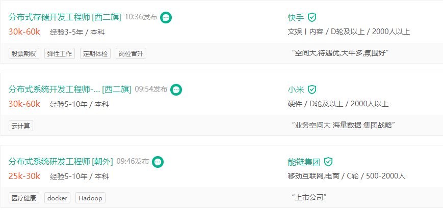

- 00 开篇词：选择 ZooKeeper，一步到位掌握分布式开发.md
- 01 ZooKeeper 数据模型：节点的特性与应用.md
- 02 发布订阅模式：如何使用 Watch 机制实现分布式通知.md
- 03 ACL 权限控制：如何避免未经授权的访问？.md
- 04 ZooKeeper 如何进行序列化？.md
- 05 深入分析 Jute 的底层实现原理.md
- 06 ZooKeeper 的网络通信协议详解.md
- 07 单机模式：服务器如何从初始化到对外提供服务？.md
- 08 集群模式：服务器如何从初始化到对外提供服务？.md
- 09 创建会话：避开日常开发的那些“坑”.md
- 10 ClientCnxn：客户端核心工作类工作原理解析.md
- 11 分桶策略：如何实现高效的会话管理？.md
- 12 服务端是如何处理一次会话请求的？.md
- 13 Curator：如何降低 ZooKeeper 使用的复杂性？.md
- 14 Leader 选举：如何保证分布式数据的一致性？.md
- 15 ZooKeeper 究竟是怎么选中 Leader 的？.md
- 16 ZooKeeper 集群中 Leader 与 Follower 的数据同步策略.md
- 17 集群中 Leader 的作用：事务的请求处理与调度分析.md
- 18 集群中 Follow 的作用：非事务请求的处理与 Leader 的选举分析.md
- 19 Observer 的作用与 Follow 有哪些不同？.md
- 20 一个运行中的 ZooKeeper 服务会产生哪些数据和文件？.md
- 21 ZooKeeper 分布式锁：实现和原理解析.md
- 22 基于 ZooKeeper 命名服务的应用：分布式 ID 生成器.md
- 23 使用 ZooKeeper 实现负载均衡服务器功能.md
- 24 ZooKeeper 在 Kafka 和 Dubbo 中的工业级实现案例分析.md
- 25 如何搭建一个高可用的 ZooKeeper 生产环境？.md
- 26 JConsole 与四字母命令：如何监控服务器上 ZooKeeper 的运行状态？.md
- 27 crontab 与 PurgeTxnLog：线上系统日志清理的最佳时间和方式.md
- 28 彻底掌握二阶段提交三阶段提交算法原理.md
- 29 ZAB 协议算法：崩溃恢复和消息广播.md
- 30 ZAB 与 Paxos 算法的联系与区别.md
- 31 ZooKeeper 中二阶段提交算法的实现分析.md
- 32 ZooKeeper 数据存储底层实现解析.md
- 33 结束语 分布技术发展与 ZooKeeper 应用前景.md
00 开篇词：选择 ZooKeeper，一步到位掌握分布式开发
你好，我是那朋，在 Java 领域从业十年，曾负责京东金融白条、金条等相关业务的技术架构研发工作，目前在一家在线教育公司担任架构师，负责公司整体的系统架构工作。
这十年，我见证了系统从单一架构到垂直架构，再到分布式架构的技术发展过程，也目睹了传统软件行业到互联网行业的快速更迭。面对大流量高并发的用户访问，以及随之产生的海量数据处理等诸多挑战，如何能为用户提供稳定可靠的服务，成为目前很多互联网大公司面临的技术问题。
比如，每年的京东 618 购物节，仅是网站支付系统的京东白条接口，每分钟的访问量都是上千万次，这是一个非常大的流量冲击，相当于单体架构下上万台机器总和的处理能力。而支付系统又是购物中最重要的一环，要想在这样的高并发场景下实现“5 个 9”（99.999%）的可用性，来保证支付成功率，使用单一架构显然是无法做到的。
而如果采用集群方式的垂直架构，当业务不断发展，应用和服务会变得越来越多，项目的维护和部署也会变得极为复杂。
因此，越来越多的公司采用分布式架构来开发自己的业务系统，通过将一个系统横向切分成若干个子系统或服务，实现服务性能的动态扩容。这样不但大幅提高了服务的处理能力，而且降低了程序的开发维护以及部署的难度。
掌握分布式系统相关知识的 IT 从业人员因此成为各大公司争抢的对象，从拉勾招聘平台我们也可以看到，分布式系统开发工程师的薪水也相对更高，平均起薪 25k 以上。正因如此，学习和提高分布式系统开发能力，也成为传统软件开发人员转行和寻求高薪职位的必要条件。
.png]
学好 ZooKeeper，提升分布式开发与架构能力
分布式技术也因此有了很多拥趸，但在工作以及和朋友的交流中，我也发现了人才供需之间的一些矛盾：
- 我本身就职于传统的软件开发企业，没有分布式系统的学习与实践环境，如何更好地学习分布式知识呢？
- 分布式知识非常零散，涉及网络传输、进程间通信、事务的并发与控制、安全性等诸多知识点，应该从何处入手？面对市面上 ZooKeeper、Dubbo、Kafka 等诸多开源框架，应该如何选择？
- 大多数面试者，都或多或少地掌握一些分布式相关知识，但在问及深层次的原理和为什么要这样做的时候，往往就顾左右而言他。
- 工作中能够通过在网络上搜索解决一些常见的技术问题，但每个公司和项目的架构都各有特点，在遇到特殊使用场景或特定程序运行环境下产生的问题时，却没有了解决思路。
这其实是由于对分布式技术体系缺乏整体认识，导致在学习分布式的时候总觉得无从下手。而开始接触分布式开发的相关人员对一些框架（比如 ZooKeeper）的底层原理并不了解，在产生问题的时候就无法很好地定位问题。
而对于选择从事分布式开发，或者想进一步提高分布式架构能力的技术人员，我认为深入学习 ZooKeeper 是最佳选择。
这是因为一个分布式系统的本质，是分布在不同网络或计算机上的程序或组件，彼此通过信息传递来协同工作的系统，而 ZooKeeper 正是一个分布式应用协调框架，在分布式系统架构中具有广泛的应用场景，是业界首选的一致性解决方案。而其开源的特性更是为我们学习底层原理，进一步提高分布式架构设计的能力提供了很好的帮助。
ZooKeeper 可以实现分布式系统下的配置管理、域名服务、分布式同步、发布订阅等使用场景，而这些场景基本就是分布式系统中最常见的问题，因此可以说：掌握了 ZooKeeper，就是掌握了分布式系统最关键的知识。
如何才能学好 ZooKeeper？
2015年，我最开始学习 ZooKeeper 的时候，市面上的学习资料非常少，我只能通过参考官方文档，然后在工作中不断摸索实践来总结经验，当时往往知其然而不知其所以然，只是简单地掌握了 ZooKeeper 应用层 API 的使用方法，而不知道其底层实现原理，因此在实际的应用场景和面试中遇到了各种各样的问题。
为此，我开始深入研究源码来了解 ZooKeeper 的底层实现，分析产生问题的原因，渐渐地我对 ZooKeeper 开始有了更为深度的理解，而这方面能力的提升也非常明显地体现在日常工作实践中：我发现自己在复杂的分布式环境下，定位问题的效率提升了，并且可以快速、有效地找到解决方法，解决复杂多变的实际问题。
记得一次用 ZooKeeper 实现一个分布式锁，在生产环境运行的时候出现了加锁错误的问题，具体表现在持有锁的 c1 客户端在未主动释放锁的情况下，另一个 c2 客户端也成功获取了锁，最终导致程序运行错误。这种在本地调试排查问题的时候没有任何异常，上线却出现了问题，而本地又找不到错误的情况，相信也是很多开发人员最苦恼的了。
我第一时间搜索答案但未果，于时开始从底层实现角度去分析问题。最终发现，原来是因为运行客户端 c1 的 JVM 发生 GC，导致服务器没有检测到 c1 客户端的”心跳“，误认为客户端下线而自动删除了临时节点，从而产生了分布式锁失效的情况。定位了问题缘由，解决问题就是自然而然的事儿了。
从我的经历中你可以看出，BAT、京东、滴滴这些大型互联网公司对技术人员的要求更高，而它们的相关职位也基本占据了薪资金字塔的顶层。面对激烈的行业竞争，除了知识的广度，我们更应该注重知识的深度，知其然更知其所以然，才能有脱颖而出的机会。
同理，如果你想真正掌握 ZooKeeper 这门技术，不能局限在软件应用层面，而是应该从实际的应用场景出发，学习具体的解决方案，再深入底层分析实现原理，具备相关的实践经验，这样才是真正地学会了。
但是目前网络上的一些学习资料，往往非常零散，不够完备和体系化；一些课程和图书又往往重点讲解 ZooKeeper 的使用技巧，而没有深入分析底层的实现原理和设计目的，对于想进一步提高 ZooKeeper 能力的人帮助甚微。
而这也正是我写作这个课程的初心。为了能够让你更好地理解底层原理技术，我想要帮助你从零开始学习 ZooKeeper，但不只是单纯地讲解概念和理论，而是从 ZooKeeper 的每个知识点出发，结合实际应用场景来抛出问题，并给出解决方案，带着你思考问题的解决思路。
要想掌握一个开源框架最底层的实现原理，最直接的方式就是阅读源代码，但是通常需要投入大量的精力和时间。而且，很多人阅读代码的方式就是部署好框架源码，然后从程序的入口到程序的出口一步步地调试来跟踪程序的执行逻辑，但是在这个过程中，你往往会被程序复杂地调用搞晕，最后也就失去了阅读源码的兴趣。
在这个专栏，我会从 ZooKeeper 的每个知识点和核心功能入手，将复杂的 ZooKeeper 框架划分为各个功能独立的模块，带你从源码层面分析底层的实现原理，在节省时间的同时，希望能够让你对 ZooKeeper 和分布式问题的解决方法有更深层次的、体系化的认知。
课程设置
本课程分 4个模块，共 32 篇文章，从基础知识点到底层原理全面深入展开介绍：
- 基础篇：介绍 ZooKeeper 的数据节点、Watch 机制、ACL 权限控制、Jute 序列化等基础知识，并结合实际工作中的应用场景帮助你强化对这些知识点的理解，为后面的学习打下基础。
- 进阶篇：ZooKeeper 主要通过客户端与服务端的相互通信完成工作，而会话则是其中最核心的概念。诸如临时节点、Watch 监控机制等功能和特性都与客户端的会话状态紧紧相关，所以了解 Zookeeper 服务器从创建到对外提供服务的整个过程，清楚会话在 Zookeeper 服务运行过程的不同状态，以及掌握 Zookeeper 的会话管理策略和底层实现原理非常重要。之后，我还会带你学习如何使用 Curator 来降低开发 ZooKeeper 的复杂度。
- 高级篇：介绍了 ZooKeeper 集群的工作方式以及内部的实现原理，重点介绍了 ZooKeeper 的 Leader 群首选举算法，集群中的 Leader、Follow、Observer 3 种角色和其各自功能。之后，我还深入源码层面分析了 3 种角色处理请求的内部实现，以及相互间的通信协作机制。
- 核心原理与实战篇：在掌握了 ZooKeeper 相关知识点的情况下，这个模块中我将再带你学习分布式事务算法二阶段提交、三阶段提交，以及 Paxos、ZAB 协议等算法，进一步加强你对 Zookeeper 的理解，并通过大量的实战案例分析，帮助你提高在日常工作中使用 ZooKeeper 解决问题的能力。
如果你是以下用户，那么本课程一定适合你：
- 希望从事分布式系统开发的技术人员：本课程非常适合作为分布式开发的入门，其中不但全面系统地讲解了 ZooKeeper 的相关知识，而且大量的案例和丰富的使用场景使你能够快速掌握分布式开发技术。
- 希望进一步提高分布式技术能力的工程师：课程中的每个模块，都涉及对源码的解析，希望加深你对 ZooKeeper 架构以及底层实现原理的了解，从而对解决工作中多变的现实问题打下坚实的基础。
结语
这些年来，我一直工作在技术开发的最前线，负责过很多产品的架构工作，并因为工作原因，面试了相当多的求职者。我深知一名技术人员在“征服”薪资金字塔的过程中需要经过多少道修炼。技术更新的速度太快了，没有一个工程师能够停下学习的步伐，但学习不应该是焦虑的过程，从本质内容入手，我们能够更从容、有效地提升自己的技术能力，让自己的职业发展走得更顺畅、更长久。
工程师之所以会获得“攻城师”的称号，不仅因为在工作中要不断征服各种难题，更因为这个过程的漫长性，想要升职加薪，就要先征服眼前的“星辰大海”。很荣幸我能够在拉勾为你分享我的学习经验，为你指引一些方向。